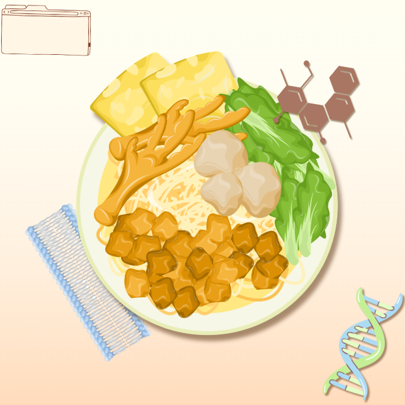
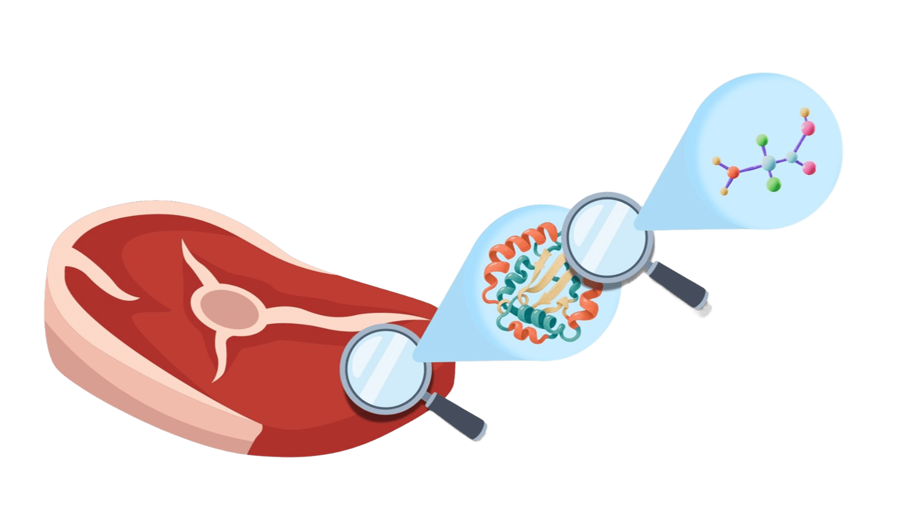

Polímeros
Explore a estrutura dos polímeros sintéticos e naturais e suas diversas aplicações na indústria e no dia a dia.
Saiba maisAs macromoléculas fazem parte dos seres vivos e estão presentes em várias coisas do nosso dia a dia. Conheça um pouco mais sobre cada tipo e descubra sua importância.
Discentes: Anthony Raed, João Victor e Letícia Silvestre
Fazer o quiz
Escolha um assunto para começar a aprender.
Explore a estrutura dos polímeros sintéticos e naturais e suas diversas aplicações na indústria e no dia a dia.
Saiba mais
Descubra a importância dos óleos e gorduras para o armazenamento de energia e proteção celular no organismo.
Saiba mais
Entenda como açúcares e amidos servem como o principal combustível para o funcionamento do corpo humano.
Saiba mais
Compreenda o papel essencial dos aminoácidos na construção muscular, regeneração de tecidos e reações biológicas.
Saiba mais
Saiba como o DNA e o RNA armazenam, transmitem e utilizam as informações genéticas fundamentais dos seres vivos.
Saiba maisDepois de explorar os temas, responda às perguntas do nosso quiz.
Ir para o quiz